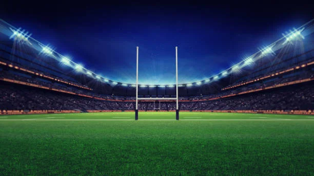
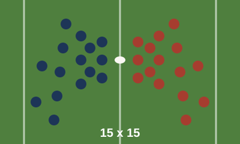
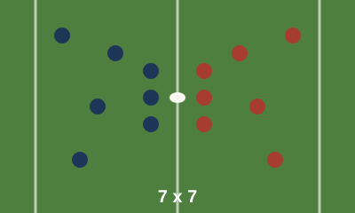

Tupis
Seleção masculina. Disputa competições sul-americanas e das Américas no XV e no Sevens.

Clubes em todas as regiões, seleções em crescimento e campeonatos o ano inteiro. Descubra o esporte e encontre um time perto de você.
Encontre um clubeO rugby chegou ao Brasil no fim do século XIX, trazido por imigrantes britânicos e por jovens brasileiros que estudaram na Inglaterra. Os primeiros jogos aconteceram em clubes de São Paulo e do Rio de Janeiro.
Durante boa parte do século XX, o esporte ficou restrito a poucos clubes. Com a criação de uma confederação nacional, a profissionalização da gestão e a volta do rugby aos Jogos Olímpicos na versão Sevens, o número de praticantes cresceu e hoje há equipes em todas as regiões do país.
Seleção masculina. Disputa competições sul-americanas e das Américas no XV e no Sevens.
Seleção feminina, principal força do Brasil no Sevens. Disputa o HSBC SVNS, o circuito mundial de Rugby Sevens.
As duas seleções disputaram o torneio de Sevens dos Jogos Olímpicos Rio 2016.


Os três clubes mais bem avaliados no Diagnóstico dos Clubes da CBRu.
Carregando clubes...